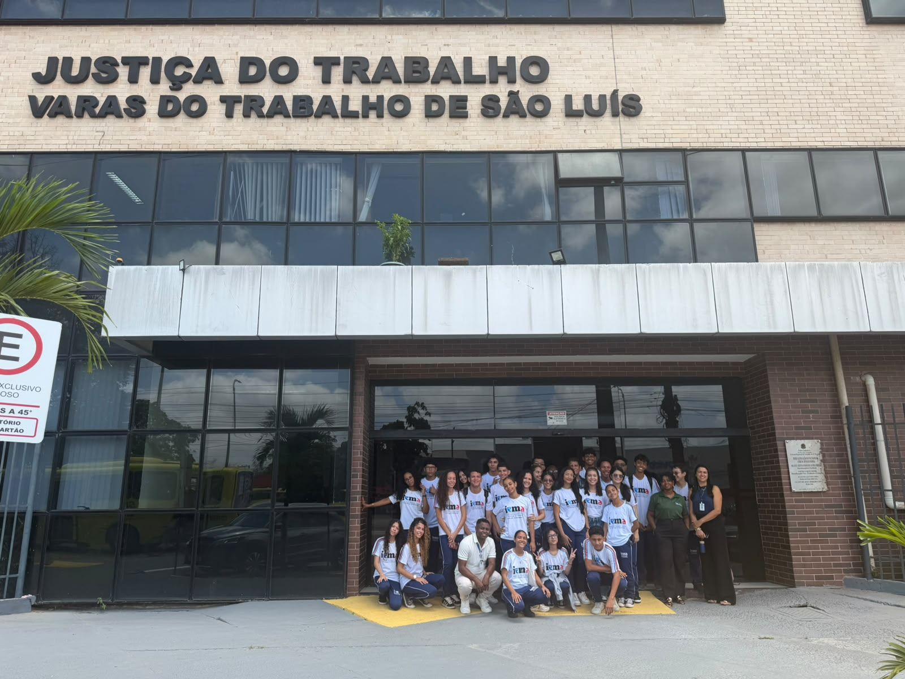
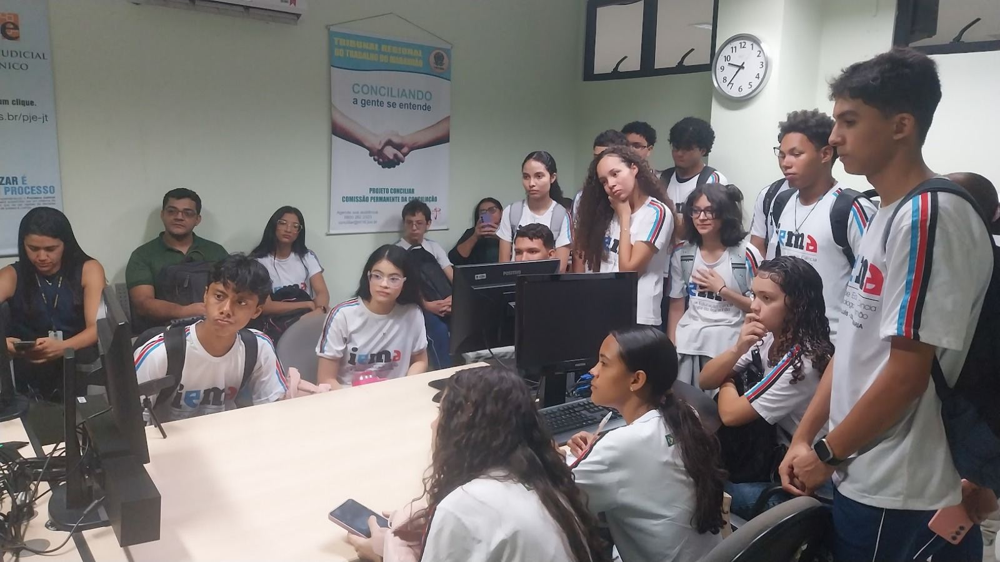
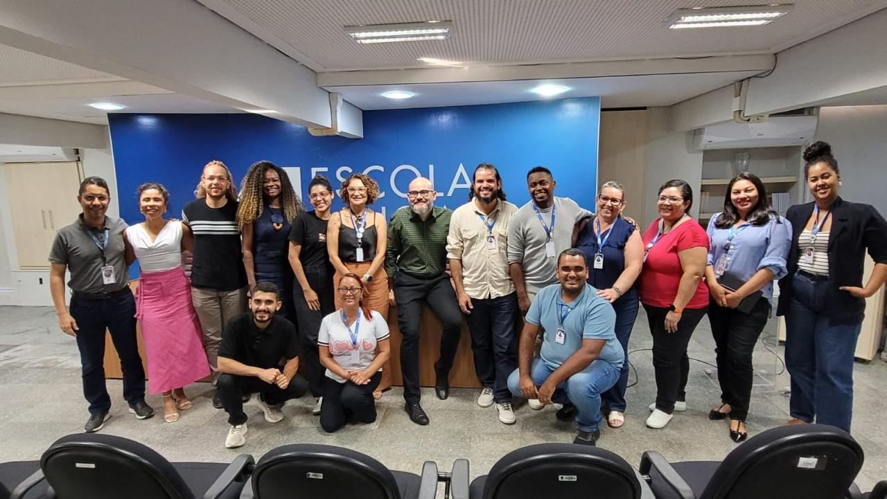
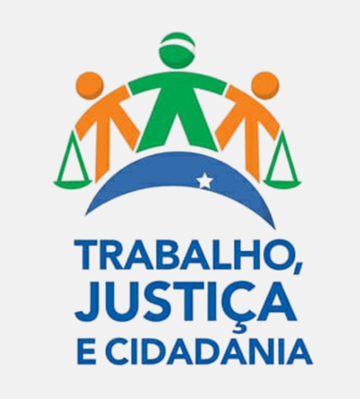

Apresentação
Conhecimento é ferramenta para prevenir injustiças
Esta cartilha foi elaborada pelos estudantes do IEMA Pleno São Luís – Cidade Operária, MA, como parte de uma iniciativa educativa voltada à promoção do conhecimento, da conscientização e da valorização dos direitos humanos e da cidadania.
O objetivo é ampliar o conhecimento dos estudantes e da comunidade sobre questões sociais fundamentais para a construção de uma sociedade mais justa, democrática e igualitária.
Conheça o projetoSumário
O que você vai aprender
Leia os conceitos, converse com colegas e professores e observe os exemplos.
Contexto histórico do racismo no Brasil
Escravidão, mito da democracia racial e a ciência racial do século XIX.
Ler tema 02O que é racismo? Cor, raça e etnia
Conceitos relacionados, mas que não são sinônimos.
Ler tema 03Tipos de racismo
Estrutural, institucional, recreativo, religioso e ambiental.
Ler tema 04Racismo, preconceito e discriminação
Ideia, prática e sistema: entenda qual é a diferença.
Ler tema 05O que é LGBTIfobia?
Homofobia, transfobia e a decisão do STF que a reconheceu como crime de racismo.
Ler tema 06O que é injúria racial?
O crime de ofender a dignidade de alguém por raça, cor, etnia ou procedência nacional.
Ler tema 07Assédio moral e assédio sexual
Como identificar, o que fazer e quais são as penalidades.
Ler tema 08Trabalho infantil
Idade mínima, aprendizagem profissional e como denunciar.
Ler tema 09Trabalho análogo à escravidão
Não é preciso haver correntes para existir exploração.
Ler temaVocê sabia?
Datas e números para não esquecer
1888
A Lei Áurea aboliu oficialmente a escravidão, mas não eliminou as desigualdades nem o racismo.
16 anos
É a idade mínima para o trabalho no Brasil. Como aprendiz, a partir dos 14, conforme a legislação.
2023
A Lei nº 14.532/2023 incluiu a injúria racial na Lei nº 7.716/1989, que trata dos crimes de racismo.
Teste seus conhecimentos
Verdade ou mito?
32 perguntas sobre racismo, injúria racial, LGBTfobia, assédio moral e sexual, trabalho infantil e trabalho escravo. Escolha uma resposta para ver a explicação e a fundamentação legal.
Não fique em silêncio
Precisa de ajuda?
Em caso de violência ou violação de direitos, procure um adulto de confiança e os serviços competentes.
Ministério Público do Trabalho
Orientação e denúncias sobre assédio e exploração no trabalho.
Ver canaisEscola e adultos de confiança
Converse com professores, gestão escolar e familiares. Você não está sozinho.
Mais orientaçõesO projeto em ação
Da sala de aula ao Tribunal
Estudantes visitaram a Justiça do Trabalho e professores participaram da formação e receberam os materiais do Programa TRT na Escola.



Quem caminha com a gente
Parceiros
Instituições e programas que apoiam o Projeto TRT na Escola.

Conhecer os direitos é o primeiro passo; respeitar, agir e denunciar violações ajuda a transformar a realidade.